objective
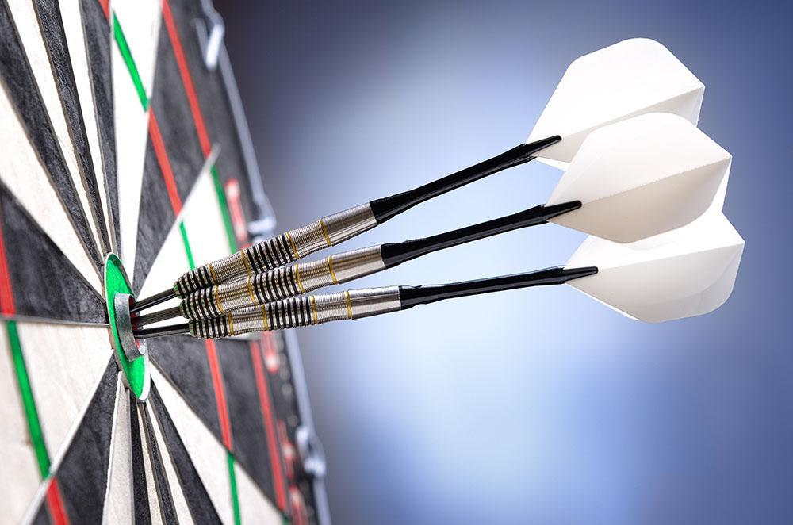
The game of darts focuses on both players racing to reduce their individual score down to zero first. Both players take turns throwing darts at the board and their score is reduced depending on the total scored. Whichever player reduces their score to zero first will be the winner.
equipment
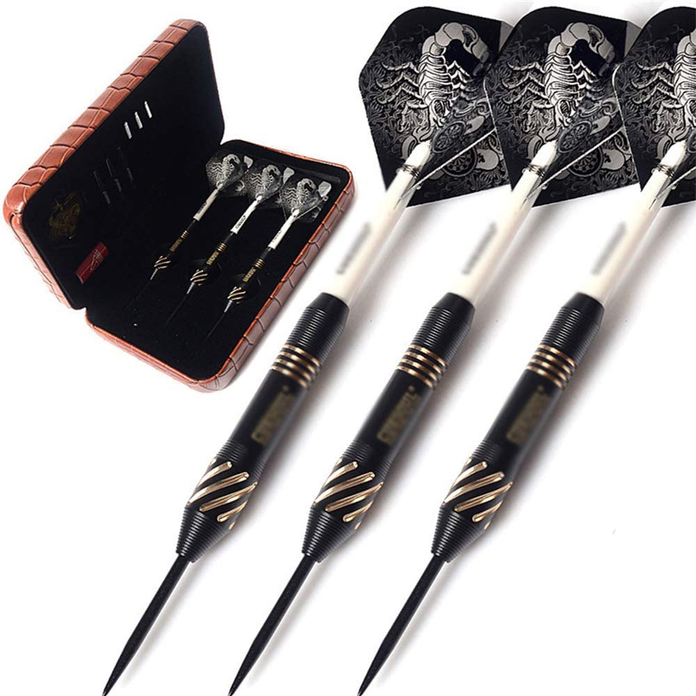
darts
A set of darts is required so players are able to score points. Each player will have one set of darts which
is made up of three individual darts.
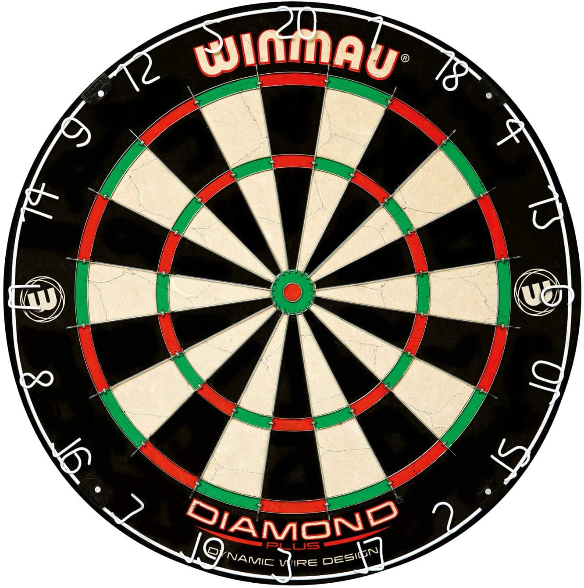
dartboard
The dartboard is a key component as players must have a board to throw their darts at and score points. When
placed upon a wall, the bullseye (centre of the dartboard) should be at eye level for a 6ft person which
is 5ft 8inches (1.73m) from the floor.
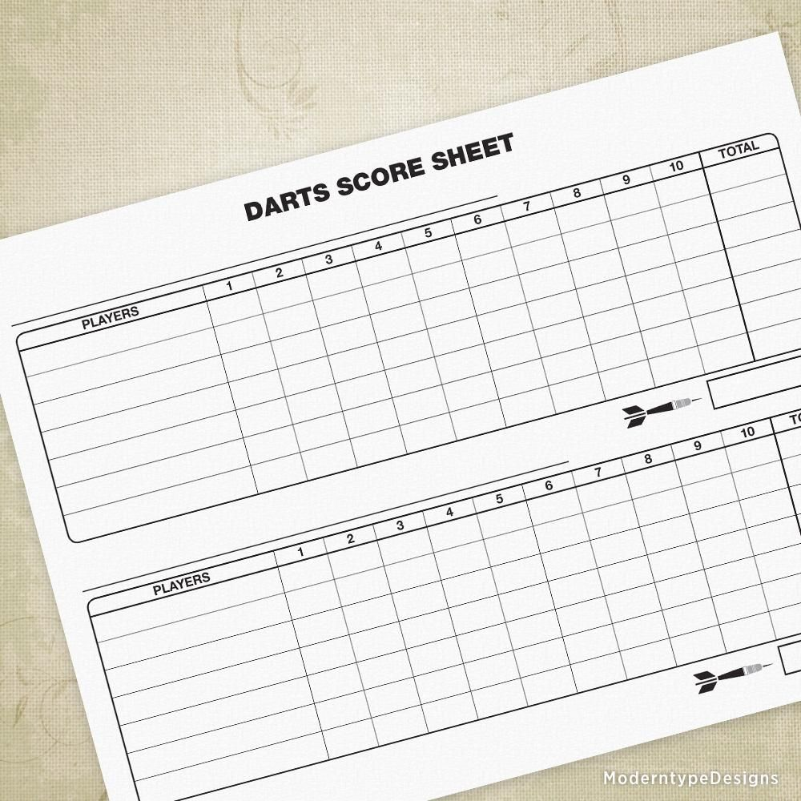
scoreboard
A scorecard is necessary to monitor players score during a game which is updated after each player completes
their turn.
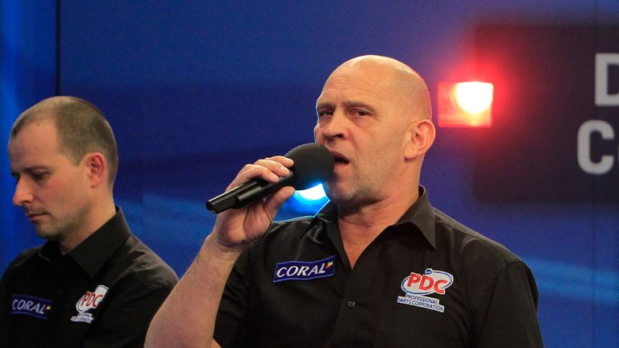
referee
Although not necessary, a referee would be beneficial especially if your mathematics skills are not to perfect
as they can quickly total the points scored by each player during their turn. But, a referee is not necessary
for all games as long as someone can calculate the points scored and remaining.
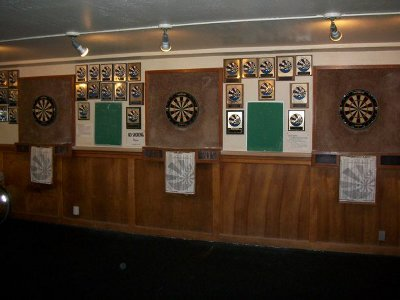
open space
An ideal environment for playing darts is one with plenty of open space as a player's distance from the dartboard
should be 7ft 9.25inches (2.37m).
scoring
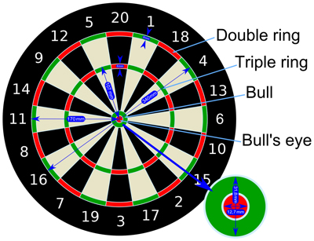
A dartboard consists of multiple rings / segments worth different number of points. The double ring is worth x2 of a segment. In addition, the bullseye is also a double and is worth 50 points. The triple ring is worth x3 of a segment. Finally, the black and white segment are worth x1 of a segment. In relation, the single bullseye (outer ring surrounding the bullseye) is also a x1 segment worth 25 points.
format
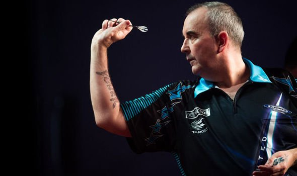
singles
Singles is the standard format for playing darts and simply one on one. In this format, each player simply take turns
throwing their darts until eventually one player's points is reduced to zero. This is the most popular format for playing
darts and used in a majority of professional competitions.
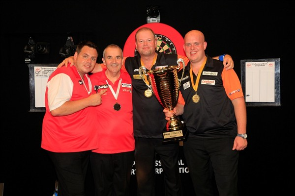
doubles
Doubles is a format consisting of four players and simply two vs two. In this format, each team have the same set points and
member takes their turn to lower their teams score then the opposing team's member has their turn and so on until one team's
points becomes zero at which point, there is a winner. Doubles is not a common format among many professional competitions
and only been used in The World Cup of Darts.
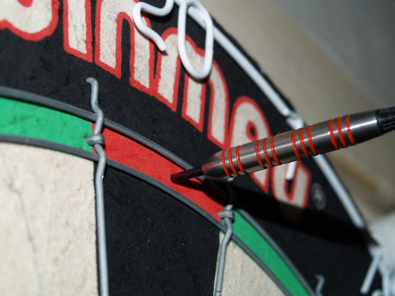
double in
Double In is a format where a player must hit at minimum of one value within the double ring before their score can begin
decreasing. As with doubles, double in is not a common format among many professional competitions and only been used in
The World Grand Prix.
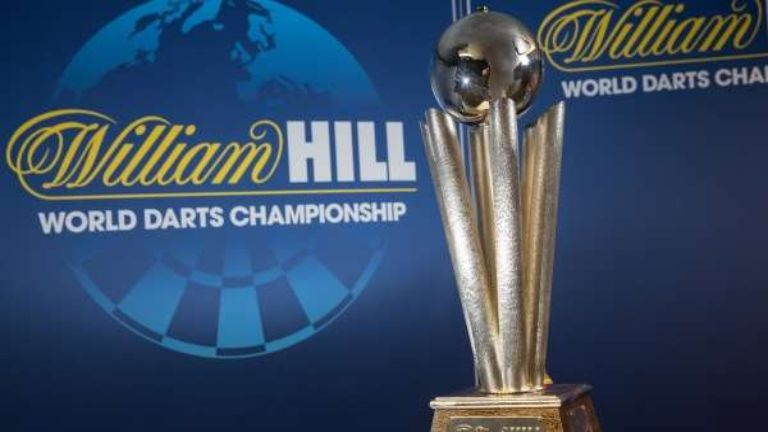
sets
Sets is a format where matches are won by winning a number of set games. For example, 1 set could equal 3 games. This
format is used every year in The PDC World Darts Championship.
faqs
how can I choose a set of darts suitable for myself?
how should I handle my darts to ensure I get the best result from throwing them?
when throwing darts, what is the best technique to use?
as a darts match progresses, how is the score monitored on a scorecard?
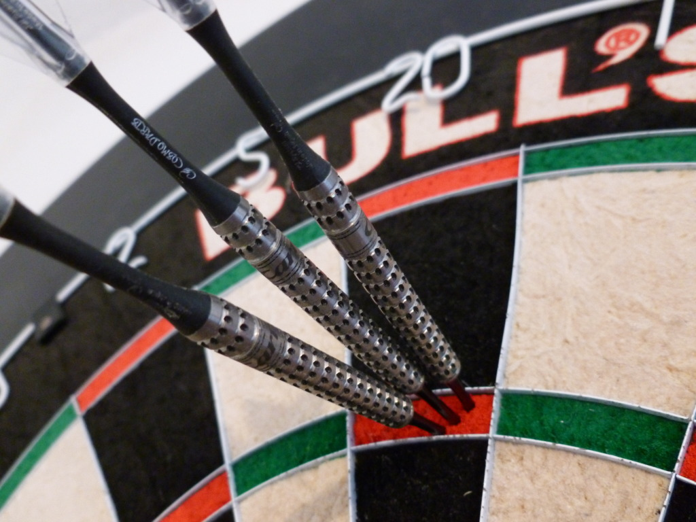
is it possible to score more than 180 points in a single turn?
Scoring more than 180 points is not possible even in a single turn. The highest value / segment
on a dartboard is 20 with its triple value equaling 60. Since a player has 3 darts, the highest
value they can score in a single turn is 3 x 3 x 20 = 180 points.
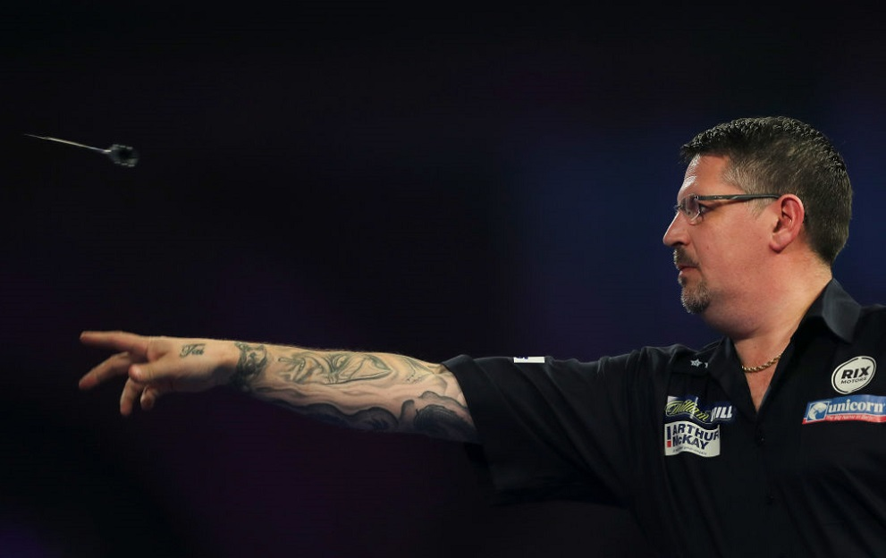
if a player throws a dart but does not go in the board, can they retake the throw?
Any thrown darts missing the dartboard or not hitting a segment counts as 0 points and cannot be
re-thrown. During a player's turn, any thrown darts which fall off the board before completing your
turn / collecting your darts cannot be re-thrown and count as 0 points. But, any darts that fall out
your hand before being thrown can be re-thrown.
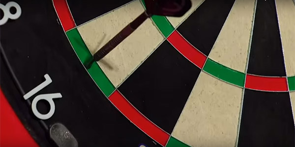
which numbers is a checkout not possible with?
Checkouts are scores which can be reduced to 0 even in a single turn with the highest equaling 170 points
via triple 20, triple 20, bullseye. But, not every score is a checkout value and are 159, 162, 163, 165, 166,
168 and 169.
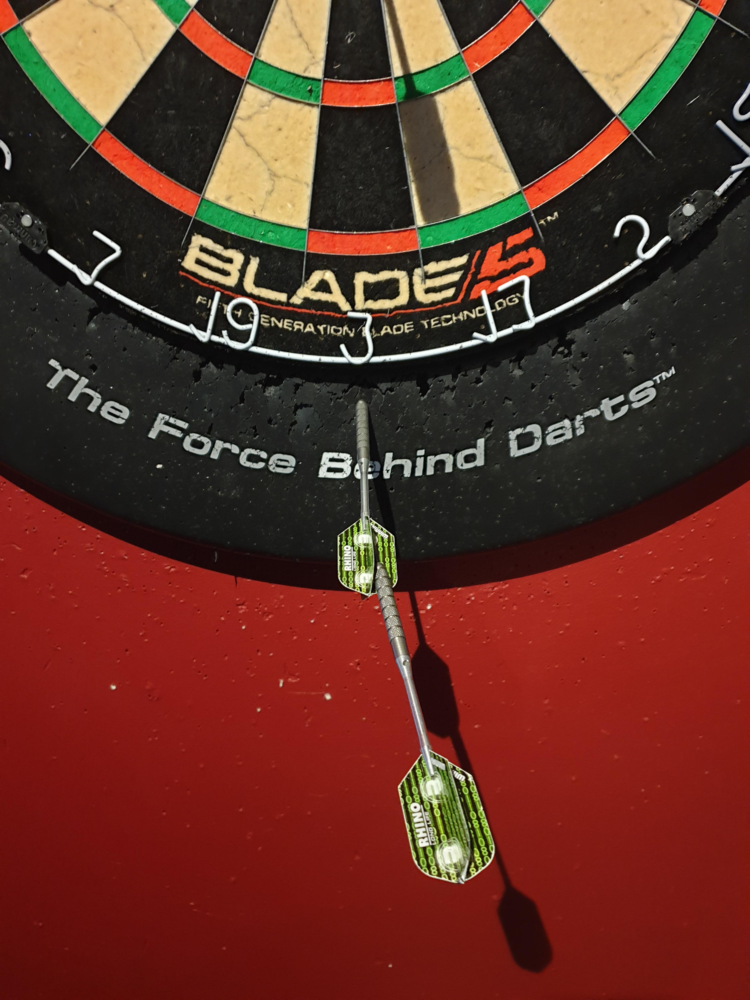
when a player scores more points than required, what will happen?
When a player score more points than they currently have, their turn automatically ends and with their score
remaining as it was at the beginning of the turn. This is known as bust / no score.